핵심 결과
Gate 아래 AlGaN 장벽에 등가 면밀도 10¹² cm⁻²의 고정 음전하를 분포시키고, 전달특성과 출력특성이 어느 방향으로 얼마나 달라지는지 계산했습니다. Fixed Charge 연구에서 Gate 아래 GaN 채널에 넣었던 전하를 AlN 바로 위 AlGaN 장벽으로 옮긴 후속 비교입니다.
- 문턱: Vds = 0.5 V에서 5 mA/mm에 도달하는 Gate 전압이 Ns = 10¹¹ cm⁻²에서 약 +0.08 V, Ns = 10¹² cm⁻²에서 약 +0.62 V 높아집니다.
- ON 저항: Vgs = 6 V, Vds = 0.1–0.5 V에서 추정한 겉보기 ON 저항이 Ns = 10¹² cm⁻²에서 약 25.9% 증가합니다.
- 고전압 전류: Vgs = 6 V, Vds = 8 V 전류가 Ns = 10¹² cm⁻²에서 23.2% 감소하고, 그에 따라 모델 격자 온도도 18.1 K 낮아집니다.
- 검증: 고정 길이 추가 계산, 다른 난수열, 상향 스윕 비교 22건(총 6,420,000 steps)에서도 결론이 유지됩니다.
이 계산은 이미 점유된 음전하의 위치와 양을 지정하고 수송 응답을 구한 것입니다. 실제 결함의 포획·방출 동역학이나 실측 특성의 재현은 범위에 포함하지 않습니다.
연구 목적과 소자 구조
Greco 등은 p-GaN HEMT의 Gate 스트레스 실험에서 관찰한 문턱 변화를 설명하는 기작 중 하나로 AlGaN 장벽에서의 전자 포획을 제안했습니다 [1]. 이 연구에서는 현재 소자의 구조를 유지한 채, 그 위치에 음전하가 존재한다는 가정만으로 전달특성과 출력특성이 어느 방향으로 얼마나 달라지는지 계산했습니다.

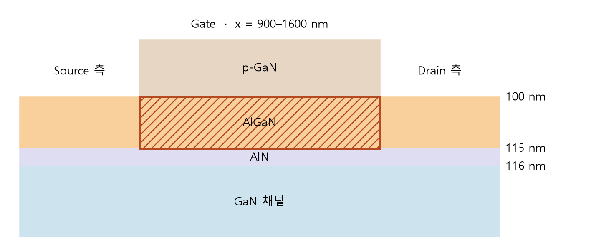
추가 전하는 x = 900–1,600 nm, z = 100–115 nm의 AlGaN 15 nm에 균일하게 분포시켰습니다. 이전 연구의 Gate 아래 GaN 관측 영역(z = 116–126 nm)과는 AlN 1 nm가 경계를 이룹니다. 추가 전하가 없는 조건과 Ns = 10¹¹ cm⁻², Ns = 10¹² cm⁻² 조건을 비교했습니다. 여기서 Ns는 추가 음전하의 등가 면밀도로, 깊이 방향으로 적분한 추가 점유 전자의 수입니다. 체적밀도로는 각각 6.67 × 10¹⁶, 6.67 × 10¹⁷ cm⁻³이며, 두 값은 이전 민감도 연구와 비교하기 위해 선택했습니다.
계산과 비교 방법
자가발열과 정공 hard wall을 켠 Monte Carlo–Poisson 모델에서 총 100,000개 입자를 1 fs 간격으로 추적했습니다. 추가 전하는 Poisson 공간전하에 반영했습니다. 이동전자·정공의 총량과 입자 가중치를 유지하므로, 채널 밀도의 변화에는 전체 이동전자 집단의 공간적 재분포가 반영됩니다. 포획 후 접촉과 주고받는 전하량을 포함한 실험의 전하수지에 대응시킬 때는 이 제약을 함께 고려해야 합니다. 불순물 산란 지도는 추가 전하가 없는 소자와 같습니다. 각 조건은 같은 안정 상태에서 시작해 20,000 steps 동안 음전하를 점진적으로 늘렸고, 이후 각 전압에서 입자·전위·온도를 이어받았습니다.
| 항목 | 조건 |
|---|---|
| 전달특성 | Vds = 0.5 V, Vgs 6 → 0 V 하향; 1 V 간격 교차 구간을 0.1 V, 0.05 V 간격으로 보강 |
| 출력특성 | Vgs = 6 V, Vds = 0.1–8 V의 11개 전압 조건 |
| 계산 규모 | 두 전하 조건 각 30개, 추가 전하 없음 30개, 총 90개 전압 조건이 안정화·정밀도 기준 통과 |
| 평균 구간 | 새 전달특성과 1 V 이상 출력특성은 80,000 steps, 낮은 Drain 전압은 240,000 steps |
| 격자와 치수 | 140 × 71 셀; Lg 700 nm, SG 400 nm, GD 1,225 nm |
| 재료 | Al 몰분율 0.20; p-GaN 유효 p형 도핑 2 × 10¹⁷ cm⁻³; z = 266–766 nm Carbon acceptor 10¹⁶ cm⁻³ 유지 |
| 입자 | 전자 95,675개, 정공 4,325개; 조건별 입자 수와 가중치 유지 |
| 열 모델 | 기판 300 K, 열저항 20 K·mm/W의 공간 균일 자가발열 |
각 전압에서 20,000 steps마다 인접한 두 시간 구간의 평균을 비교했습니다. 전류·온도·열수지·전위·정공 분포·Gate 채널 면밀도 기준을 두 번 연속 통과한 뒤 전류 평균의 블록 표준오차를 확인했습니다. 추가 전하가 없는 조건의 기존 곡선 중 초기 전압 조건 일부는 더 짧은 평균을 사용했습니다. 이 비교에서 Mg 활성화율을 새롭게 추출하지는 않았습니다.
전류는 x = 600–2,725 nm 수송 구간에 있는 전자의 x방향 속도를 합하고 구간 길이 2,125 nm로 정규화한 추정량을 시간 평균했으며, Gate–Drain 구간의 속도합 전류와도 대조했습니다.
기존 수송 모델은 음향 포논, 극성 광학 포논, 압전, 합금 및 이온화 불순물 산란과 설정된 계면 포논 산란을 사용합니다. z = 116–126 nm의 전자 수송 창에서는 z방향 전계 가속을 0.01배로 줄이는 기존 준2DEG 근사를 유지했습니다. Poisson 전계는 그대로 계산하며, 별도의 자기일관 Schrödinger–Poisson 해는 구하지 않았습니다. Gate 전위에는 기존 약 −7.034 V의 내장전위 보정이 포함됩니다. 접촉에서 입자를 재주입하면서 총 이동입자 수를 유지하는 경계 조건을 사용했습니다. 상세 층·입자 가중치·설정은 모델 명세에 기록했습니다.
안정성 판정. 안정성 검사는 계산을 20,000 steps 더 진행할 때마다 반복하고, 살펴보는 시간 구간도 20,000 steps씩 앞으로 옮겼습니다. 80,000 steps 구간에는 직전 검사에서 본 기록 60,000 steps가, 240,000 steps 구간에는 220,000 steps가 포함되어 각각 75%, 91.7%가 겹칩니다. 따라서 두 번 연속 통과했다는 것은 계산을 조금 더 이어가도 정해 둔 기준을 만족했다는 뜻이며, 서로 다른 자료로 두 번 독립적으로 확인했다는 뜻은 아닙니다. 우연히 변화가 작은 시점에 통과한 것은 아닌지 확인하기 위해, 대표 조건에서는 멈춘 상태에서 320,000 또는 480,000 steps를 일찍 멈추지 않고 미리 정한 길이만큼 더 계산했습니다. 그 결과는 추가 검증에 제시합니다.
블록SEM. SEM은 평균의 표준오차(Standard Error of the Mean)입니다. 블록SEM은 전류 기록을 여러 묶음으로 나누고 각 묶음 평균의 차이를 이용해 평균 전류의 통계적 불확실성을 추정한 값입니다. 순간 전류의 흔들림이나 반드시 참값을 포함하는 오차 범위를 뜻하지 않습니다. 조건 사이의 상관, 입자 초기분포, 격자 세분화까지 포함한 전체 불확실성은 따로 평가해야 합니다.
그림의 기호는 계산점이고 전류 오차 막대는 시간 블록으로 구한 평균의 표준오차입니다. 곡선은 인접 계산점 사이의 형태 보존 구간별 3차 보간(PCHIP)입니다. 문턱은 기준 전류를 사이에 둔 두 계산점의 선형 보간으로, 저항은 낮은 Drain 전압 세 전압 조건의 가중 직선 적합으로 산출했습니다.
전달특성과 문턱 이동

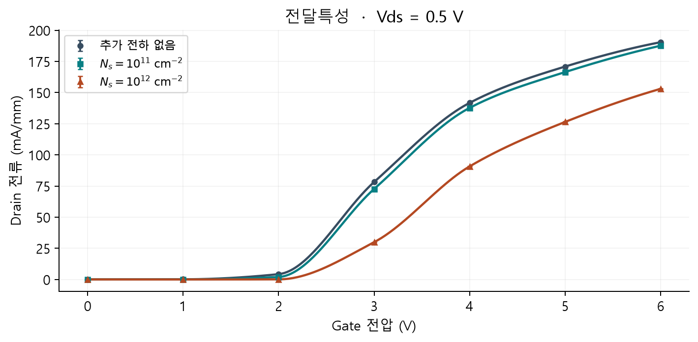

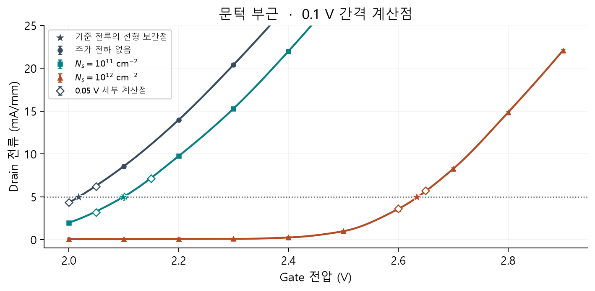
| 추가 음전하의 크기 | Vth,CC (5 mA/mm, Vds 0.5 V) | 문턱 이동 | 0.1–0.5 V 겉보기 ON 저항 | 8 V 전류 |
|---|---|---|---|---|
| 추가 전하 없음 | 2.018 V | — | 2.610 Ω·mm | 488.84 mA/mm |
| Ns = 10¹¹ cm⁻² | 2.099 V | +0.081 V | 2.660 Ω·mm | 477.71 mA/mm |
| Ns = 10¹² cm⁻² | 2.633 V | +0.616 V | 3.286 Ω·mm | 375.25 mA/mm |
문턱은 세 조건 모두 하향 스윕의 0.05 V 간격 교차점에서 선형 보간했습니다. Ns = 10¹¹ cm⁻² 조건은 추가한 2.05 V 전압 조건과 기존 2.10 V 전압 조건을 사용합니다. 저항과 8 V 전류는 기존 주 계산값이며, 정해진 길이만큼 추가 계산한 평균은 추가 검증에 함께 제시합니다. 문턱은 이 페이지의 일정 전류 작업 정의입니다. Greco 등의 1 μA 기준 문턱과 정량 비교하려면 소자 폭·읽기 전압·추출 조건을 맞춰야 합니다.
Ns = 10¹¹ cm⁻² 조건에서 추가한 Vgs = 2.05 V의 전류는 3.193 ± 0.170 mA/mm, 기존 2.10 V는 5.035 ± 0.184 mA/mm였습니다. 평균값을 기준으로 5 mA/mm 교차 구간을 확보했으며 Vth는 약 2.099 V, 추가 전하가 없는 소자 대비 이동은 약 +0.081 V였습니다. 다만 2.10 V 전류는 여전히 표준오차 범위에서 기준 전류에 걸칩니다. 추가 전압 조건은 기존 2.10 V 저장 상태를 이어받은 하향 계산이며 독립 초기화는 아닙니다.
평균 전류의 표준오차가 문턱에 주는 영향은 전류의 블록SEM을 문턱 부근의 기울기 gm = dId/dVgs로 나눈 SEM(Id)/gm으로 환산했습니다. 같은 전류 오차라도 곡선이 가파르면 전압 환산값은 작고, 완만하면 커집니다. 이 값은 추가 전하가 없는 조건에서 약 5.2 mV, Ns = 10¹¹ cm⁻² 조건에서 약 5.0 mV, Ns = 10¹² cm⁻² 조건에서 약 3.2 mV였습니다. 문턱을 독립적으로 여러 번 구해 얻은 표준편차나 모든 오차를 포함한 값은 아니며, 교차 구간 선택과 비선형 보간의 오차도 포함하지 않습니다. 표의 세 자리 소수는 추출값 표기이며 1 mV 정확도를 보장하지 않습니다.
기준 전류에 따른 문턱 이동
문턱 정의의 영향을 확인하기 위해 Vds = 0.5 V에서 기준 전류를 5–20 mA/mm로 바꾸었습니다. 모든 조건에 같은 하향 0.1 V 탐색 자료와 두 계산점 선형 보간을 적용했으므로, 위 표의 0.05 V 세부 방법과는 구분해 비교합니다.
| 기준 전류 (mA/mm) | 추가 전하 없음 Vth (V) | Ns = 10¹¹ cm⁻² ΔVth (V) | Ns = 10¹² cm⁻² ΔVth (V) |
|---|---|---|---|
| 5 | 2.017 | +0.084 | +0.614 |
| 7.5 | 2.075 | +0.077 | +0.609 |
| 10 | 2.127 | +0.078 | +0.600 |
| 15 | 2.216 | +0.079 | +0.586 |
| 20 | 2.294 | +0.077 | +0.578 |

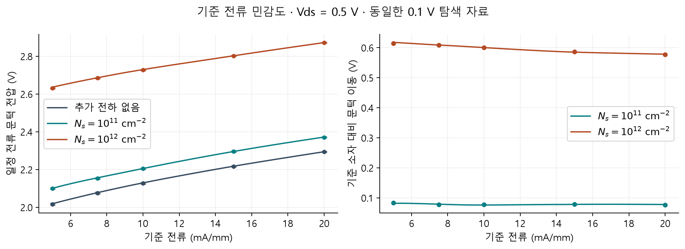
Ns = 10¹¹ cm⁻² 조건의 이동은 약 +0.077 – +0.084 V, Ns = 10¹² cm⁻² 조건은 약 +0.578 – +0.614 V로 증가 방향이 유지됩니다. Ns = 10¹² cm⁻² 조건에서 기준 전류가 높아질수록 이동량이 줄어드는 것은 전달특성의 형태 변화와 ON 전류 억제가 함께 반영되기 때문입니다. 따라서 일정 전류 문턱의 절대값과 이동량에는 기준 전류를 함께 명시해야 합니다. 2·3 mA/mm는 추가 전하가 없는 소자의 세부 탐색 최저 전류 약 4.30 mA/mm보다 낮아 세 조건의 비교를 보류했습니다.
출력특성과 자가발열

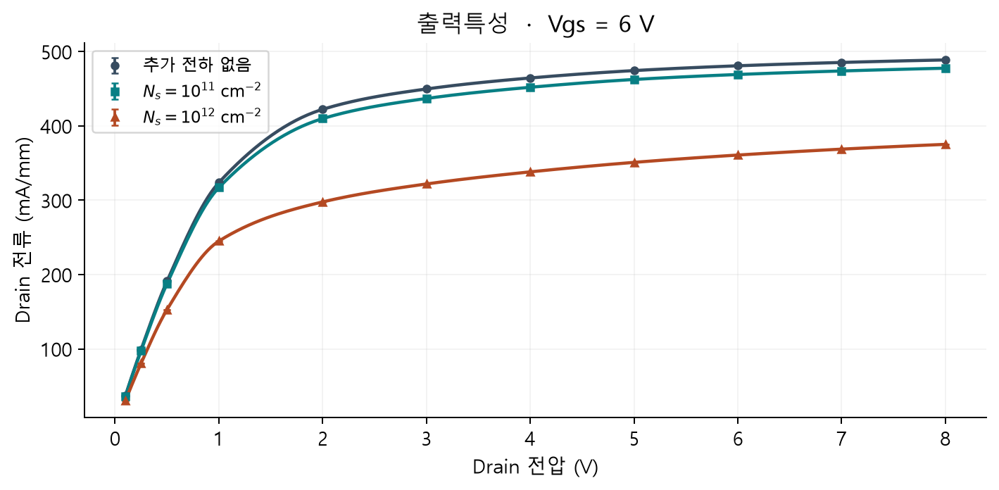

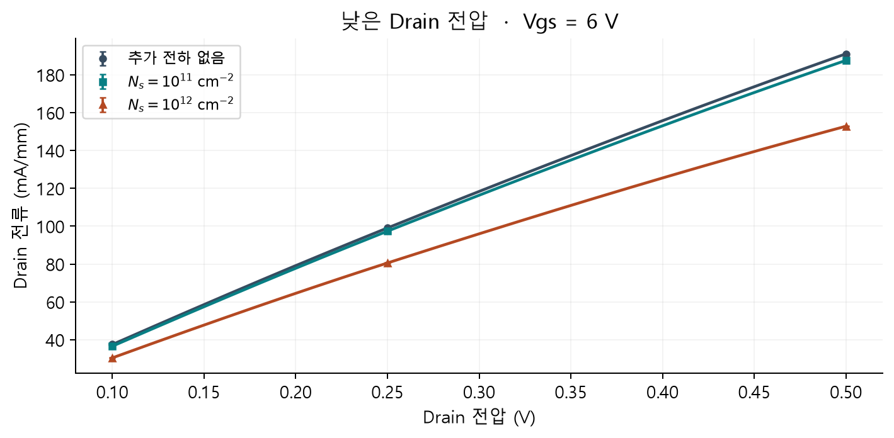
Vgs = 6 V, Vds = 0.1·0.25·0.5 V 세 전압 조건의 가중 직선 적합으로 구한 겉보기 저항은 Ns = 10¹¹ cm⁻² 조건에서 약 1.90%, Ns = 10¹² cm⁻² 조건에서 약 25.89% 증가했습니다. 세 전압 조건을 직선으로 적합했을 때 최대 전류 잔차는 조건별로 약 2.5–2.6 mA/mm였으므로, 저항값은 이 전압 구간을 대표하는 기울기로 해석합니다.
구간별 저항은 R = ΔVds/ΔId로 따로 계산했고 0 V 계산점은 포함하지 않았습니다. 두 구간에서 증가 방향은 유지되지만 증가율은 달랐으므로, 수치는 해당 Vds 구간과 함께 제시합니다.
| Vds 구간 | 추가 전하 없음 저항 (Ω·mm) | Ns = 10¹¹ cm⁻² 저항 / 증가율 | Ns = 10¹² cm⁻² 저항 / 증가율 |
|---|---|---|---|
| 0.10–0.25 V | 2.436 | 2.469 / +1.35% | 2.992 / +22.82% |
| 0.25–0.50 V | 2.717 | 2.770 / +1.96% | 3.461 / +27.37% |

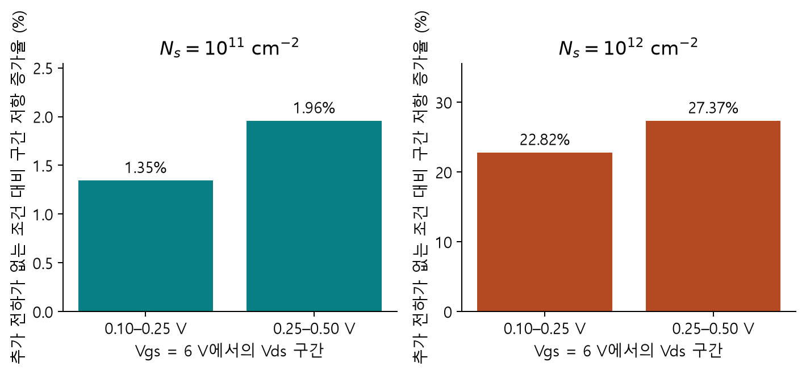

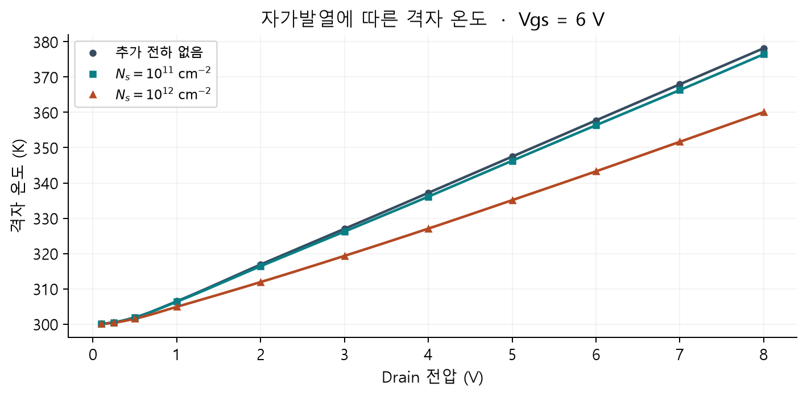
기판 온도 300 K와 열저항 20 K·mm/W를 사용한 공간 균일 자가발열 모델에서, 같은 Drain 전압의 전류 감소는 소비전력 감소로 이어졌습니다. Ns = 10¹² cm⁻² 조건에서는 8 V 온도가 추가 전하가 없는 조건보다 18.10 K 낮았습니다. 보고한 전류에는 이 온도 변화가 수송에 미친 영향도 포함되어 있습니다.
채널 전위와 전자 밀도

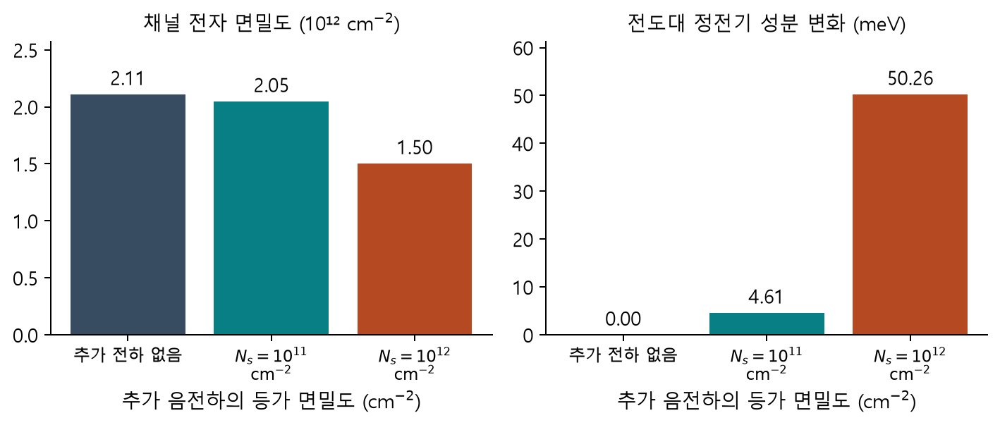
Ns = 10¹² cm⁻² 조건에서 GaN 채널 창의 전도대 정전기 성분은 평균 50.3 meV 높아졌고, 전자 면밀도는 2.11 × 10¹²에서 1.50 × 10¹² cm⁻²로 28.7% 감소했습니다. Ns = 10¹¹ cm⁻² 조건에서는 각각 +4.6 meV와 −2.95%였습니다. ON 상태의 전위 저하와 전자 밀도 감소는 음전하가 채널 형성을 억제한다는 정전기적 해석과 정성적으로 일치합니다.
이 관측은 Vgs = 6 V의 공간 평균입니다. 문턱을 추출한 Vgs 약 2.0–2.6 V에서는 전자 분포와 전하 차폐, 전위 분포가 달라집니다. 따라서 ON 상태의 평균 50.3 meV와 문턱 이동 0.616 V를 직접 대응시키지 않습니다. 문턱 이동 기작을 더 구체적으로 평가하려면 문턱 부근의 위치별 전위·전도대·전자 밀도를 비교해 주입 장벽과 채널 형성 변화를 확인해야 합니다.

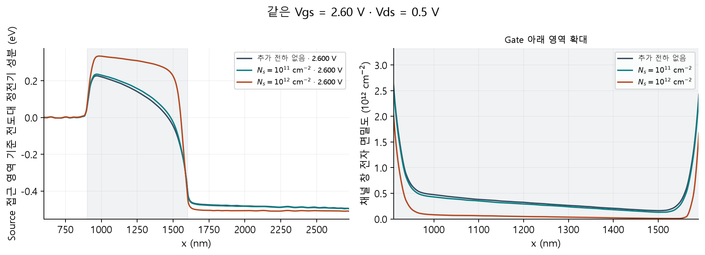
같은 Gate 전압에서 Ns = 10¹² cm⁻²의 추가 음전하는 Gate 아래 전도대 정전기 성분을 높이고 채널 창의 전자 밀도를 낮춥니다. 이는 같은 전류에 도달하려면 더 높은 Gate 전압이 필요하다는 해석과 일치합니다. 전위의 공간 변화는 Source 측 x = 600–800 nm의 같은 깊이 창을 기준으로 표시했습니다.

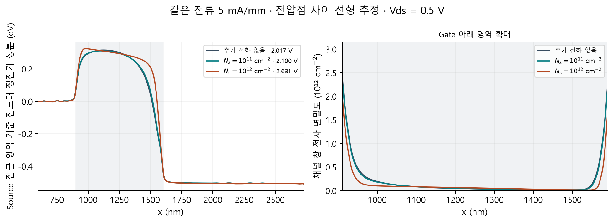
같은 전류로 맞추면 세 조건의 분포 차이가 줄어듭니다. 이 그림은 기존 0.1 V 하향 자료의 교차점에서 선형 보간한 평균장이므로, 2.05 V 추가 전압 조건을 반영한 0.05 V 문턱 표와 추출 자료가 다르고, 해당 보간 전압에서 수송을 새로 계산한 결과와도 구분합니다. 표시한 전도대는 z = 116–126 nm 창 평균의 정전기 성분입니다. 수직 양자 구속 에너지와 준페르미 준위까지 포함한 전체 밴드 구조나 엄밀한 주입 장벽 높이로 해석하지 않습니다.
추가 계산으로 확인한 수송 안정성과 이력 의존성
초기 결과의 종료 판정과 계산 이력에 대한 민감도를 확인하기 위해 세 전하 조건에서 22개 계산, 총 6,420,000 steps를 추가했습니다. Ns = 10¹¹ cm⁻² 조건의 2.05 V 한 전압 조건, 대표 바이어스의 고정 길이 9개, 문턱 부근의 다른 호스트 난수열 3개, 상향 스윕 9개로 구성했습니다. 추가 전하를 다시 증가시키지 않고 저장된 입자·전위·온도에서 이어받았으며, 입자 100,000개·hard wall ON·자가발열 ON을 유지했습니다. 기존 결과와 원본 식별값이 바뀌지 않았음도 확인했습니다.
종료 판정 뒤의 고정 길이 계산
문턱 부근과 Vgs = 6 V, Vds = 8 V는 각각 320,000 steps, Vgs = 6 V, Vds = 0.1 V는 480,000 steps를 추가했습니다(1 fs 간격에서 320 ps, 480 ps). 중간 통과 여부와 무관하게 정한 길이를 모두 실행하고 전체 구간의 전류를 평균했습니다. 전반·후반을 겹치지 않는 두 구간으로 나눠 전류·온도·열수지·전위·정공 분포·Gate 채널 면밀도를 비교했습니다.

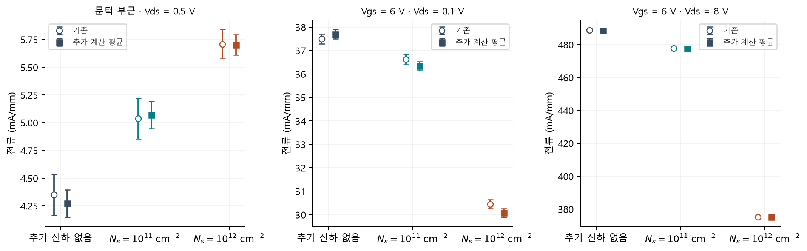
| 추가 전하 | 바이어스 Vgs / Vds | 기존 전류 | 추가 계산 평균 전류 | 후속 − 기존 |
|---|---|---|---|---|
| 추가 전하 없음 | 6 / 8 V | 488.840 | 488.536 ± 0.174 | −0.304 |
| 추가 전하 없음 | 6 / 0.1 V | 37.495 | 37.690 ± 0.201 | +0.195 |
| 추가 전하 없음 | 2 / 0.5 V | 4.350 | 4.270 ± 0.124 | −0.079 |
| Ns = 10¹¹ cm⁻² | 6 / 8 V | 477.712 | 477.411 ± 0.169 | −0.301 |
| Ns = 10¹¹ cm⁻² | 6 / 0.1 V | 36.617 | 36.341 ± 0.194 | −0.275 |
| Ns = 10¹¹ cm⁻² | 2.1 / 0.5 V | 5.035 | 5.069 ± 0.124 | +0.034 |
| Ns = 10¹² cm⁻² | 6 / 8 V | 375.248 | 375.252 ± 0.156 | +0.004 |
| Ns = 10¹² cm⁻² | 6 / 0.1 V | 30.447 | 30.071 ± 0.185 | −0.375 |
| Ns = 10¹² cm⁻² | 2.65 / 0.5 V | 5.708 | 5.700 ± 0.093 | −0.008 |
표의 전류 단위는 mA/mm이며 ±는 블록SEM입니다. 기존 평균과 후속 평균의 차이는 −0.375 – +0.195 mA/mm였고, 두 SEM의 제곱합 제곱근으로 나눈 차이의 최대값은 1.42였습니다. 이 비율은 시간 이력 사이의 상관과 Windows·Linux 실행 환경 차이를 포함한 전체 신뢰구간이나 정식 유의확률이 아니라 비교용 진단값입니다. 온도 평균의 기존 대비 변화는 최대 약 0.095 K였습니다.

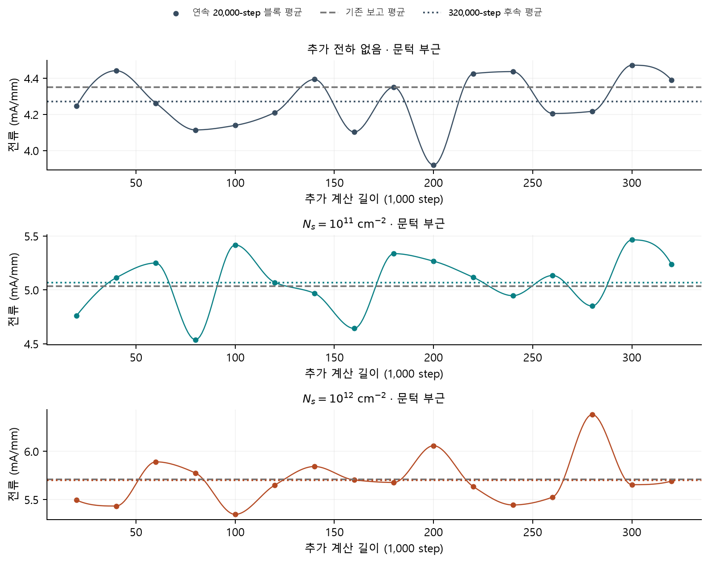
다른 난수열을 포함한 12개 고정 구간은 모두 선언한 전반·후반 판정 기준 안에 있었습니다. 최대 전류 차이는 0.458 mA/mm, 전위 RMS 차이는 3.33 mV, 정공 분포의 정규화 L1 차이는 0.0120이었습니다. 전류 허용치는 전반 평균의 1%와 0.5 mA/mm 중 큰 값이며, 온도 차이와 열수지 잔차는 각각 1 K 미만, 전위 RMS는 5 mV 미만, 정공 L1은 0.05 미만, Gate 면밀도 차이는 전반 평균의 1%와 10⁹ cm⁻² 중 큰 값 미만으로 판정했습니다. 특히 8 V 전류 허용치는 약 3.75–4.89 mA/mm이므로 통과 여부와 실제 차이를 함께 해석합니다. 저전압 후속 검증은 0.1 V 한 전압 조건이며 0.1·0.25·0.5 V의 저항 적합 전체를 다시 계산한 것은 아닙니다.
문턱 부근 난수열과 스윕 방향

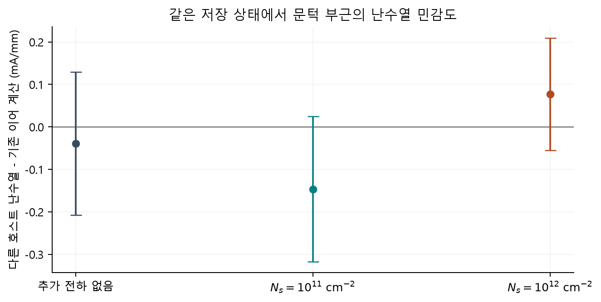
호스트 난수열 변경 후 전류 차이는 추가 전하가 없는 조건에서 −0.039, Ns = 10¹¹ cm⁻² 조건 −0.146, Ns = 10¹² cm⁻² 조건 +0.077 mA/mm였습니다. Ns = 10¹¹ cm⁻² 조건 2.10 V에서 원래 난수 이력의 고정 평균은 5.069 ± 0.124, 다른 난수열은 4.923 ± 0.118 mA/mm로 5 mA/mm를 오갔습니다. 따라서 약 +0.08 V의 문턱 이동을 지지하지만 1 mV 이하의 정밀도를 주장하지 않습니다. 동일한 저장 물리 상태에서 출발한 비교이므로 독립적인 입자 초기분포 검증과는 구분합니다.

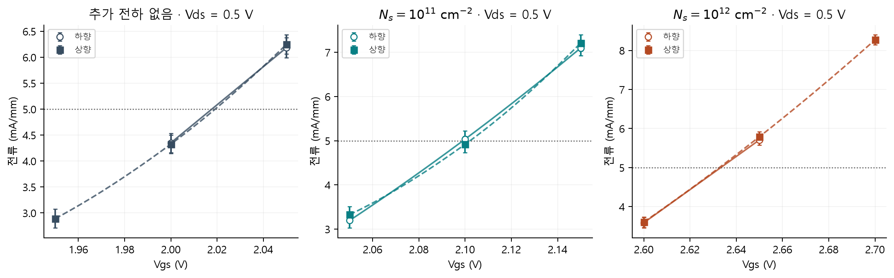
| 추가 전하 | 하향 Vth (V) | 상향 Vth (V) | 상향 − 하향 (mV) | 하향 / 상향 ΔVth (V) |
|---|---|---|---|---|
| 추가 전하 없음 | 2.0177 | 2.0175 | −0.19 | — |
| Ns = 10¹¹ cm⁻² | 2.0990 | 2.1018 | +2.74 | +0.0813 / +0.0842 |
| Ns = 10¹² cm⁻² | 2.6333 | 2.6319 | −1.37 | +0.6156 / +0.6144 |
상향 스윕은 추가 전하가 없는 조건 1.95·2.00·2.05 V, Ns = 10¹¹ cm⁻² 조건 2.05·2.10·2.15 V, Ns = 10¹² cm⁻² 조건 2.60·2.65·2.70 V의 세 전압 조건씩입니다. 개별 Vth의 방향 차이는 −1.37 – +2.74 mV로 국소 블록SEM 전압 환산값 약 3–5 mV보다 작았습니다. 검사한 문턱 부근에서 뚜렷한 방향 차이는 관측하지 못했으나, 전체 0–6 V 왕복 특성이나 trapping 히스테리시스를 검증한 것은 아닙니다.
결론, 해석 범위와 다음 연구
현재 구조에서 Gate 아래 AlGaN에 지정한 음전하는 일정 전류 문턱을 높이고, 낮은 Drain 전압의 겉보기 저항을 증가시키며, 높은 Drain 전압의 전류를 감소시켰습니다. 기준 전류를 5–20 mA/mm로 바꾸어도 문턱 이동의 증가 방향은 유지됐습니다. Ns = 10¹² cm⁻² 조건의 저항 증가율은 Vgs = 6 V에서 Vds = 0.10–0.25 V 구간 약 22.8%, 0.25–0.50 V 구간 약 27.4%로 달랐으므로, 문턱 이동과 저항 변화의 크기는 추출 조건과 함께 해석합니다.
이 계산은 이미 점유된 음전하의 위치와 양을 지정한 뒤 수송 응답을 구했습니다. 실험에서 어느 결함에 몇 개의 전자가 포획되는지, 스트레스 후 얼마 동안 머무는지는 별도의 관측량입니다. 블록 평균의 시간 표본 오차와 대표 조건의 난수열 비교는 소자 간 편차나 모델의 전체 불확실성과 구분해야 합니다.
| 검토 항목 | 현재 확보한 근거 | 남은 확인 |
|---|---|---|
| 전달·출력특성과 자가발열 | 기존 90개 전압 조건 및 대표 조건의 고정 길이 후속 계산 | 격자·입자 수 및 모든 출력특성 전압 조건의 독립 검증 |
| 문턱 추출 기준의 영향 | 5–20 mA/mm 비교 및 Ns = 10¹¹ cm⁻² 조건 2.05 V 추가 전압 조건 | 기준 전류 2·3 mA/mm 비교는 이번 범위에서 제외 |
| 문턱 부근의 정전기 해석 | 같은 Gate 전압의 저장 분포와 같은 전류의 평균장 보간 | 보간 전압에서 직접 계산한 상태와의 대조 |
| 계산 이력의 영향 | 같은 저장 상태의 다른 난수열과 문턱 주변 상향 세 전압 조건 비교 | 독립 초기분포·전체 왕복 스윕 검증 |
추가 검증 후에도 Ns = 10¹¹ cm⁻² 조건의 문턱 이동 약 +0.08 V, Ns = 10¹² cm⁻² 조건의 약 +0.62 V라는 결론이 유지됐습니다. 검증한 추가 수송 길이는 수백 ps이며, μs 이상의 포획·방출 동역학이나 실험 trap의 종류·점유 시간은 검증하지 않았습니다.
다음 비교에서는 같은 등가 전하량을 Gate 계면과 SG·GD의 SiN/AlGaN 계면에 각각 배치해 위치별 ΔVth와 ΔRon을 함께 볼 수 있습니다. 위치별 길이가 다르면 같은 면밀도에서도 총전하가 달라지므로 두 양을 함께 기록해야 합니다. 이후 실험의 문턱 이동에 맞춘 전하량으로 ON 저항 변화까지 예측되는지 확인하면, 한 관측량에만 맞춘 해석보다 전하 위치 가설을 더 엄격하게 평가할 수 있습니다.
참고 문헌과 데이터
[1] G. Greco et al., “Threshold voltage instability by charge trapping effects in the gate region of p-GaN HEMTs,” Applied Physics Letters 121, 233506 (2022). DOI: 10.1063/5.0122097 · 공개 원문
데이터. 보완한 문턱과 주 비교 결과표 · 보완 전 조건별 결과표 · 기존 90개 전압 조건의 전류와 오차 · 기준 전류별 문턱과 보간 진단 · 층·입자·수송 모델 명세 · 추가 계산 22건 · 고정 길이 검증 · 상향·하향 문턱 비교 · 다른 호스트 난수열 비교